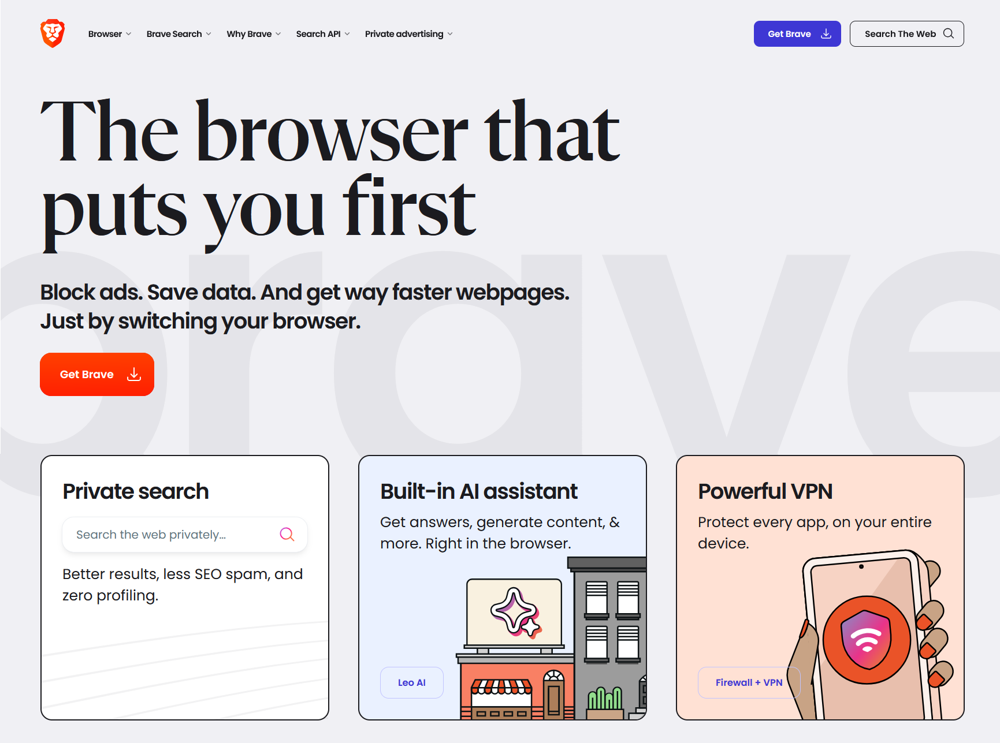
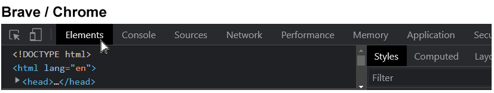
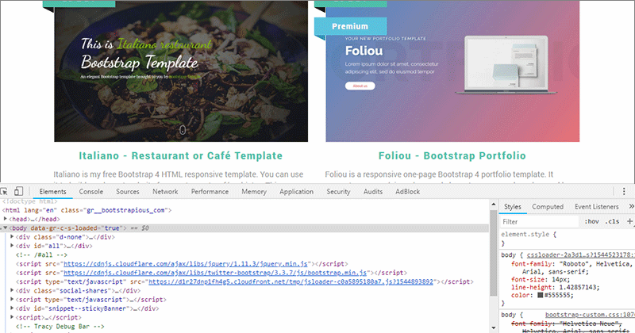
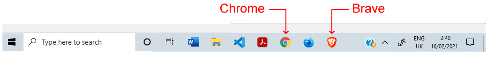
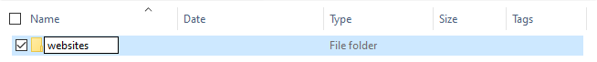

Learning Goals
At the end of this Tutorial, you will be able to:
- Download and install two web browsers: Chrome and Brave.
- View the source code of a web page (HTML file) and stylesheet (CSS file).
- Display the DevTools window in a web browser.
- View the full names of files in File Explorer of Microsoft Windows 10 and 11.
- Create a logical folder structure for the various files typically used in software projects.
About web browsers
A web browser is a software program or app that gives you access to web pages and services on the Internet. With a web browser, you can display text, images and animations, watch videos, listen to audio podcasts and music, exchange emails, and purchase products and services.
Default web browsers
Your laptop or desktop computer comes with a default web browser pre-installed:
- Microsoft Edge: This web browser is included with the Microsoft Windows operating system. Since 2016, Microsoft has recommended using Edge as a replacement for the earlier and flawed Internet Explorer browser.
- Safari: This web browser is included in the macOS and iOS operating systems used on Apple computers, tablets and mobile phones.
In these Tutorials, I recommened you instead use one of two web browsers most popular with web designers and frontend developers: Google Chrome or Brave (similar to Google Chrome but faster).
Installing Brave
Brave is a privacy-focused web browser developed by Brendan Eich, creator of the JavaScript programming language. Both Brave and Google Chrome are based on the same open-source software code, so both work in a largely similar way and support almost all the same browser extensions.
Because Brave blocks ads and website trackers, it can run up to six times faster than Chrome. Follow these steps to download and install it.
- Use your current web browser to go to this web address: https://brave.com
- Click the button named Get Brave  Brave will begin downloading the appropriate version for your computer and operating system. Follow the usual download and installation instructions.
The Brave web browser will install and then open on your computer.
Viewing HTML and CSS source files
You can use a web browser to display the underlying HTML and CSS code for a web page. Here is an example:
- Use your web browser to go to this web address:
https://www.citizens
information.ie - Right-click anywhere on the web page. From the context menu displayed, choose the View Page Source command.
 You can now see the HTML code of the web page in a new tab of your web browser.
You can now see the HTML code of the web page in a new tab of your web browser.

- Web pages are typically linked to one or more stylesheet files that control their visual appearance – such as the position of various elements, their fonts and colours.
Stylesheet files are included near the top of the HTML code in the <head> section, and their file names end in .css. You will also see that they are shown as clickable hyperlinks.
In this example, you can see two stylesheet files, named print.css and screen.css.

- Click on the second stylesheet, screen.css
 You can now see the content of the stylesheet.
You can now see the content of the stylesheet.
When finished, you can close the browser tabs for the Citizens Information website.
Working with DevTools
DevTools (the short name for Developer Tools) are built in to every web browser. They enable you to view and experiment with the content and code of web pages.
To open DevTools in your browser:
- Press Ctrl + Shift + i (Windows) or ⌘ + Shift + i (Mac)
- Display the Elements (Brave/Chrome) tab. 
- Click the arrow icon at the top-left of the DevTools window.
Changing the DevTools position
To position or ‘dock’ the DevTools window:
- Open the DevTools window.
- Near the top-right of the DevTools window, click the vertical ellipses (three dots) icon.

- Click the docking position you want for the DevTools window.
Below is an example of the DevTools window docked on the right.

And here is an example of the DevTools window docked along the bottom.
Changing the DevTools font size
To change the font size in the DevTools window, select the window, and then press the Ctrl key followed by the plus (+) or minus (-) key. To reset, press Ctrl and 0.
Pinning browsers to your Windows Taskbar
On Microsoft Windows, you can start applications in a variety of ways. For those web browsers you use frequently, it makes sense to add or ‘pin’ them to your Taskbar along the bottom of your Windows desktop. You can then launch any one of them with a single click.
To pin an application, follow these steps:
- Enter the name of the application in the Windows Search Box at the left of the Taskbar.
- When the application name is displayed, right-click on it.
- Choose Pin to taskbar from the list of options displayed.

- Repeat these actions for as many web browsers as you want to pin to your Taskbar.
In future, when you need to launch Brave, Chrome, Firefox or other pinned browsers, you can simply and quickly click the relevant icon on the Taskbar.
Viewing the full names of files
You will find it easier to work with the various types of files you will meet in web design when you can see the full name of each file.
By default, the Finder on Apple Macs shows the name of every file in full.
Microsoft Windows, however, hides the second part of file names, known as the file name extension.

Follow the steps below to view file name extensions in Windows 11.
- Open File Explorer.
- Click the View menu and then the Show command.
- From the sub-menu now displayed, select the File name extensions option.

And here are the steps for Windows 10:
- Open File Explorer.
- In the menu at the top of the screen, click the View option.

- You are now shown a new ribbon of options. Check the box named File name extensions.

✅ In future, all files will shown with their full file name that includes the file name extension.
Pinning File Explorer to your Windows Taskbar
If you are using Windows, you can add File Explorer to the Taskbar along the bottom of your Windows desktop. You can then launch it at any time with a single click.
Follow these steps:
- In the Search Box at the left of the Taskbar, enter "File Explorer" (without quotes).

- When the File Explorer icon is displayed in the list of search results, right-click on it.
- Choose Pin to taskbar from the list of options displayed.

In future, when you need to launch File Explorer, you can simply click its icon on the Taskbar.

✅ Task completed.
Creating your folder structure
Before creating any web pages, it’s a good idea to create a location on your computer to store them.
Working with web pages is very different to working with Microsoft Word or Adobe Photoshop. With those apps, you are typically working with only a single file at any one time.
In contrast, web pages can contain lots of files. There is the web page itself (an HTML file), one or more stylesheets (CSS files), several images (JPG or PNG files) and maybe some JavaScript code (JS files) and videos (MP4 files) as well.
That’s a lot of files to keep track of!
Moreover, any one website will commonly contain multiple web pages, and each of these will have its own list of images and other files.
Creating your ‘main’ folder
Your first step is to create a 📁 folder on your computer to store all your web design work – all your files and sub-folders. You can think of this as your ‘main’ or ‘high-level’ folder.
For Microsoft Windows users, here are the steps:
- Open File Explorer.
- In the left-hand column, click either on Documents or your C: drive.

- On the next screen displayed, in the blank space at the right side, right-click and choose New | New folder from the context menu.

- Give your new folder a name. For example, websites.


DO NOT type upper-case letters. Type websites.
DO NOT type 'Websites' or 'WEBSITES'.
DO NOT type blank spaces such as 'web sites'.
✅ That’s it. In future, you will never need to wonder where your web-related files are located on your computer – they will always be in your 📁 websites folder.
Creating your ‘exercises’ sub-folder
Creating your ‘main’ 📁 websites folder is only a first step. You will be working with many dozens of files in this course. To keep your files organised, you will be creating a number of sub-folders. And many of these will, in turn, contain sub-folders of their own.
Follow these steps to create a sub-folder to store the exercise files you will work with in this and the next few Tutorials.
- In Windows, open File Explorer.
- Select and display your 📁 websites folder.
- In the blank space at the right side, right-click and choose New | New folder from the context menu.
- Give your new sub-folder this name:
exercises
DO NOT type upper-case letters. Type exercises.
DO NOT type 'Exercises' or 'EXERCISES'.
✅ All done. Your folder and sub-folder structure should now look as shown below.

✅ Another task completed. You are now ready to create your first web pages.